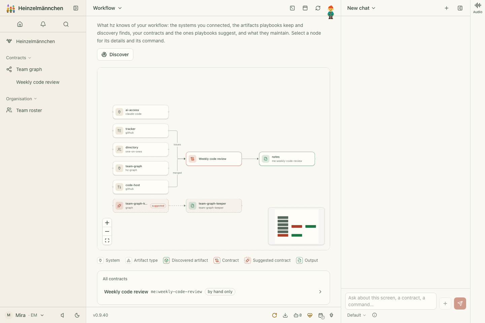
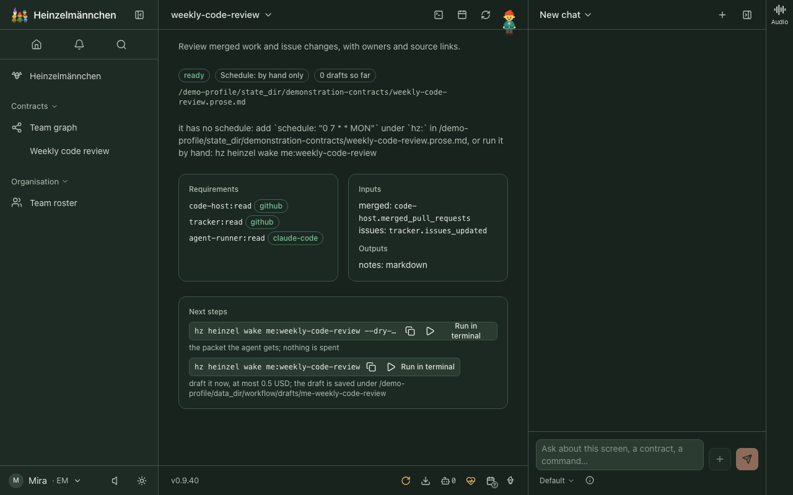
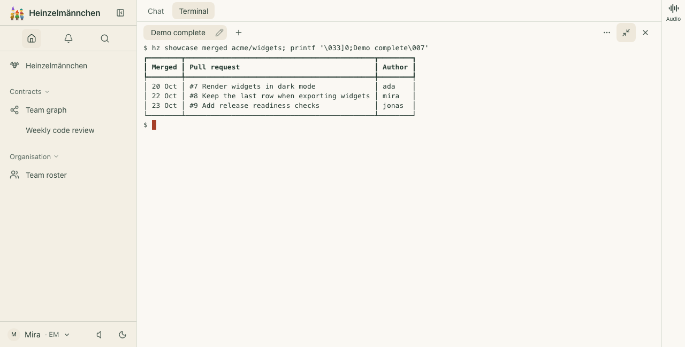
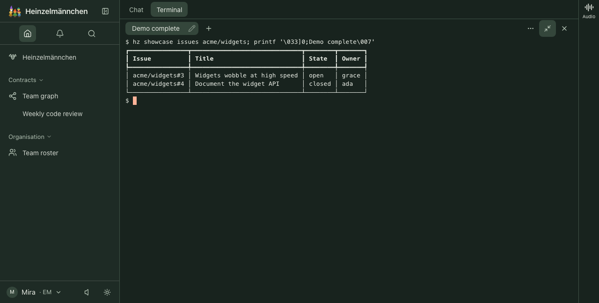
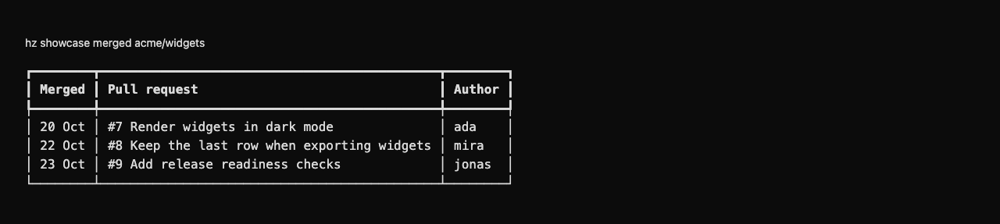
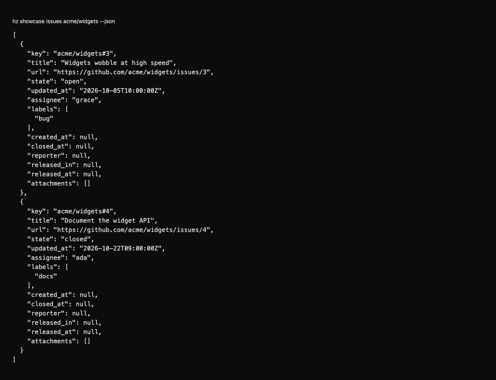

heinzel-github
Isolated demonstration profile · Core 0.9.40 · Review these captures before committing. Click an image to inspect it at full size.

UI · The fictional weekly code review in the Core workflow graph and contracts list
UI · Fictional weekly review declares merged-work and issue inputs; no report was generated
UI · Fictional merged pull requests in the app terminal, using a fixture-only requester and the real adapter
UI · Fictional issue changes, owners and states in the app terminal, using a fixture-only requester
CLI · Read fictional merged work in the shell with a fixture-only requester and the real adapter
CLI · Fictional issue results as JSON for scripts and agents, using a fixture-only requester